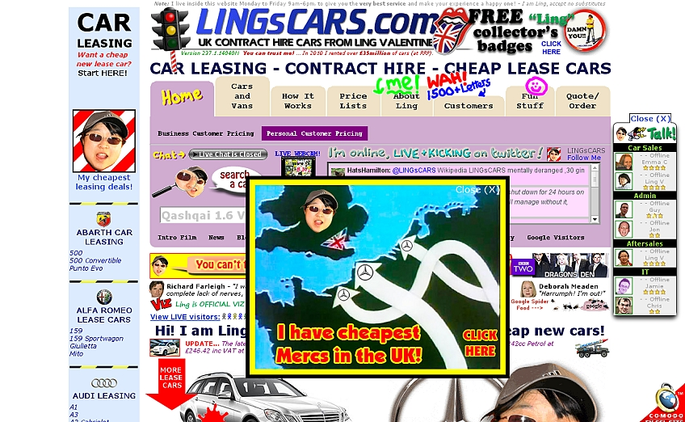

Review van design 1: Jubilee Seafood Seasoning
- De kleuren geven meer contrast waardoor het geheel beter leesbaar is.
- Voldoende whitespace, maakt het overzichtelijk.
- Het is duidelijk dat het om Jubilee gaat, goede visual hierarchy.
- De typografie is nog steeds niet geweldig, maar beter dan het was.
Zit meer constistentie in.
- De layout is eenvoudiger en daardoor beter leesbaar.

Review van design 2: Ling's Cars
- Wat moet je hier nou van zeggen...
- Alle kleuren van de regenboog zijn gebruikt, dus superdruk.
- Whitespace is amper te vinden, je weet niet waar het ene onderwerp ophoudt en het andere begint.
- Visual hierarchy is niet te bekennen, dus geen idee waar het nou eigenlijk over gaat.
- Respect voor de makers, ik had het niet slechter kunnen doen.

Review van design 3: NewDeal Design Agency
- Het kleurenpallet maakt het lezen van de site onprettig en slecht leesbaar, te weinig contrast tussen het geel en wit.
- De typografie is niet heel consistent, waarom is de underline in uppercase?
- Het logo van het bedrijf is een beetje weggemoffeld in de hoek, dus niet duidelijk waar deze site over gaat.

Review van design 4: Yale School of Art
- Alle verschillende kleuren voegen niets toe en lijken willekeurig gekozen te zijn.
- Het achtergrondplaatje herhaalt zich telkens, op een onoverzichtelijke manier.
- Whitespaces kloppen niet, niet heel duidelijk wat nou bij wat hoort.
- De compositie van de website is slecht, alles staat aan de rechterkant, zonder duidelijke reden.